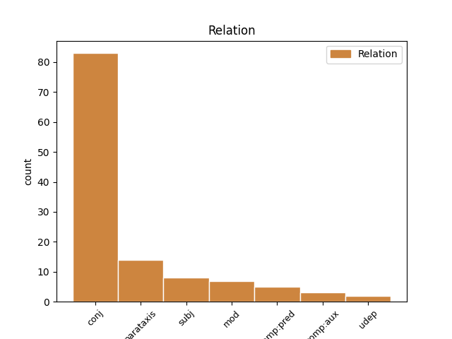
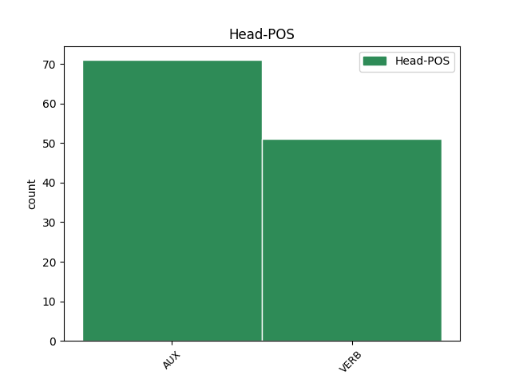
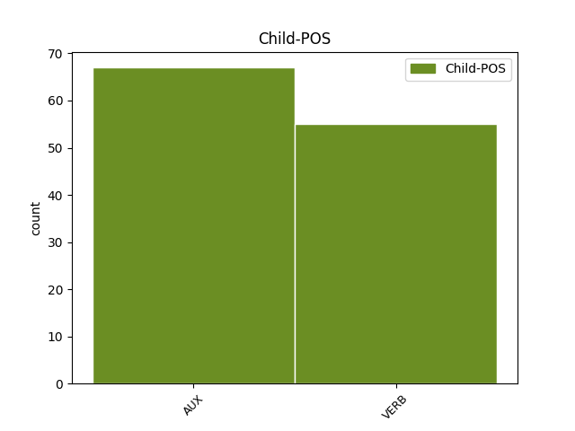

Distribution of features within this leaf



Agreement Rules sorted by frequency.
- When the dependent token is the conjunct(conj) of the head token, and the head token is AUX and the dependent token is AUX.
1 The _ _ _ _ 0 _ _ _
2 stage _ _ _ _ 0 _ _ _
3 was be AUX PAST Mood=Ind|Number=Sing|Person=1|Tense=Past|VerbForm=Fin 0 _ _ _
4 hers _ _ _ _ 0 _ _ _
5 and _ _ _ _ 0 _ _ _
6 if _ _ _ _ 0 _ _ _
7 she _ _ _ _ 0 _ _ _
8 was _ _ _ _ 0 _ _ _
9 performing _ _ _ _ 0 _ _ _
10 for _ _ _ _ 0 _ _ _
11 anyone _ _ _ _ 0 _ _ _
12 it _ _ _ _ 0 _ _ _
13 was be AUX PAST Mood=Ind|Number=Sing|Person=1|Tense=Past|VerbForm=Fin 3 conj _ _
14 herself _ _ _ _ 0 _ _ _
15 . _ _ _ _ 0 _ _ _
1 But _ _ _ _ 0 _ _ _
2 that _ _ _ _ 0 _ _ _
3 was be VERB PAST Mood=Ind|Number=Sing|Person=1|Tense=Past|VerbForm=Fin 0 _ _ _
4 in _ _ _ _ 0 _ _ _
5 the _ _ _ _ 0 _ _ _
6 future _ _ _ _ 0 _ _ _
7 , _ _ _ _ 0 _ _ _
8 and _ _ _ _ 0 _ _ _
9 in _ _ _ _ 0 _ _ _
10 1959 _ _ _ _ 0 _ _ _
11 my _ _ _ _ 0 _ _ _
12 father _ _ _ _ 0 _ _ _
13 was be VERB PAST Mood=Ind|Number=Sing|Person=1|Tense=Past|VerbForm=Fin 3 conj _ _
14 in _ _ _ _ 0 _ _ _
15 the _ _ _ _ 0 _ _ _
16 fullness _ _ _ _ 0 _ _ _
17 of _ _ _ _ 0 _ _ _
18 his _ _ _ _ 0 _ _ _
19 present _ _ _ _ 0 _ _ _
20 , _ _ _ _ 0 _ _ _
21 he _ _ _ _ 0 _ _ _
22 could _ _ _ _ 0 _ _ _
23 do _ _ _ _ 0 _ _ _
24 no _ _ _ _ 0 _ _ _
25 wrong _ _ _ _ 0 _ _ _
26 . _ _ _ _ 0 _ _ _
1 Mother _ _ _ _ 0 _ _ _
2 was be VERB PAST Mood=Ind|Number=Sing|Person=1|Tense=Past|VerbForm=Fin 0 _ _ _
3 in _ _ _ _ 0 _ _ _
4 the _ _ _ _ 0 _ _ _
5 bath _ _ _ _ 0 _ _ _
6 , _ _ _ _ 0 _ _ _
7 with _ _ _ _ 0 _ _ _
8 bubbles _ _ _ _ 0 _ _ _
9 up _ _ _ _ 0 _ _ _
10 to _ _ _ _ 0 _ _ _
11 her _ _ _ _ 0 _ _ _
12 neck _ _ _ _ 0 _ _ _
13 , _ _ _ _ 0 _ _ _
14 and _ _ _ _ 0 _ _ _
15 my _ _ _ _ 0 _ _ _
16 grandmother _ _ _ _ 0 _ _ _
17 , _ _ _ _ 0 _ _ _
18 on _ _ _ _ 0 _ _ _
19 the _ _ _ _ 0 _ _ _
20 bath-stool _ _ _ _ 0 _ _ _
21 , _ _ _ _ 0 _ _ _
22 was be AUX PAST Mood=Ind|Number=Sing|Person=1|Tense=Past|VerbForm=Fin 2 conj _ _
23 reading _ _ _ _ 0 _ _ _
24 out _ _ _ _ 0 _ _ _
25 loud _ _ _ _ 0 _ _ _
26 from _ _ _ _ 0 _ _ _
27 the _ _ _ _ 0 _ _ _
28 Bible _ _ _ _ 0 _ _ _
29 . _ _ _ _ 0 _ _ _
1 But _ _ _ _ 0 _ _ _
2 if _ _ _ _ 0 _ _ _
3 you _ _ _ _ 0 _ _ _
4 have _ _ _ _ 0 _ _ _
5 to _ _ _ _ 0 _ _ _
6 do _ _ _ _ 0 _ _ _
7 it _ _ _ _ 0 _ _ _
8 by _ _ _ _ 0 _ _ _
9 keeping _ _ _ _ 0 _ _ _
10 that _ _ _ _ 0 _ _ _
11 forty _ _ _ _ 0 _ _ _
12 years _ _ _ _ 0 _ _ _
13 or _ _ _ _ 0 _ _ _
14 whatever _ _ _ _ 0 _ _ _
15 sitting _ _ _ _ 0 _ _ _
16 at _ _ _ _ 0 _ _ _
17 the _ _ _ _ 0 _ _ _
18 table _ _ _ _ 0 _ _ _
19 with _ _ _ _ 0 _ _ _
20 you _ _ _ _ 0 _ _ _
21 and _ _ _ _ 0 _ _ _
22 your _ _ _ _ 0 _ _ _
23 children _ _ _ _ 0 _ _ _
24 ... _ _ _ _ 0 _ _ _
25 ach _ _ _ _ 0 _ _ _
26 , _ _ _ _ 0 _ _ _
27 it _ _ _ _ 0 _ _ _
28 's be AUX PRES Mood=Ind|Number=Sing|Person=3|Tense=Pres|VerbForm=Fin 0 _ _ _
29 not _ _ _ _ 0 _ _ _
30 healthy _ _ _ _ 0 _ _ _
31 , _ _ _ _ 0 _ _ _
32 it _ _ _ _ 0 _ _ _
33 makes make VERB PRES Mood=Ind|Number=Sing|Person=3|Tense=Pres|VerbForm=Fin 28 parataxis _ _
34 me _ _ _ _ 0 _ _ _
35 sick _ _ _ _ 0 _ _ _
36 . _ _ _ _ 0 _ _ _
1 Rebecca _ _ _ _ 0 _ _ _
2 's be AUX PRES-AUX Mood=Ind|Number=Sing|Person=3|Tense=Pres|VerbForm=Fin 0 _ _ _
3 been _ _ _ _ 0 _ _ _
4 to _ _ _ _ 0 _ _ _
5 the _ _ _ _ 0 _ _ _
6 Sputnik _ _ _ _ 0 _ _ _
7 and _ _ _ _ 0 _ _ _
8 she _ _ _ _ 0 _ _ _
9 says say VERB PRES Mood=Ind|Number=Sing|Person=3|Tense=Pres|VerbForm=Fin 2 conj _ _
10 it _ _ _ _ 0 _ _ _
11 's _ _ _ _ 0 _ _ _
12 terrific _ _ _ _ 0 _ _ _
13 now _ _ _ _ 0 _ _ _
14 . _ _ _ _ 0 _ _ _
1 What _ _ _ _ 0 _ _ _
2 is be AUX PRES-AUX Mood=Ind|Number=Sing|Person=3|Tense=Pres|VerbForm=Fin 15 subj _ _
3 most _ _ _ _ 0 _ _ _
4 needed _ _ _ _ 0 _ _ _
5 in _ _ _ _ 0 _ _ _
6 this _ _ _ _ 0 _ _ _
7 , _ _ _ _ 0 _ _ _
8 as _ _ _ _ 0 _ _ _
9 well _ _ _ _ 0 _ _ _
10 as _ _ _ _ 0 _ _ _
11 in _ _ _ _ 0 _ _ _
12 other _ _ _ _ 0 _ _ _
13 areas _ _ _ _ 0 _ _ _
14 , _ _ _ _ 0 _ _ _
15 is be AUX PRES Mood=Ind|Number=Sing|Person=3|Tense=Pres|VerbForm=Fin 0 _ _ _
16 a _ _ _ _ 0 _ _ _
17 serious _ _ _ _ 0 _ _ _
18 in _ _ _ _ 0 _ _ _
19 depth _ _ _ _ 0 _ _ _
20 analysis _ _ _ _ 0 _ _ _
21 of _ _ _ _ 0 _ _ _
22 the _ _ _ _ 0 _ _ _
23 problems _ _ _ _ 0 _ _ _
24 . _ _ _ _ 0 _ _ _
1 ' _ _ _ _ 0 _ _ _
2 There _ _ _ _ 0 _ _ _
3 's be VERB PRES Mood=Ind|Number=Sing|Person=3|Tense=Pres|VerbForm=Fin 0 _ _ _
4 no _ _ _ _ 0 _ _ _
5 sea _ _ _ _ 0 _ _ _
6 there _ _ _ _ 0 _ _ _
7 is be VERB PRES Mood=Ind|Number=Sing|Person=3|Tense=Pres|VerbForm=Fin 3 parataxis _ _
8 there _ _ _ _ 0 _ _ _
9 ? _ _ _ _ 0 _ _ _
10 ' _ _ _ _ 0 _ _ _
1 All _ _ _ _ 0 _ _ _
2 he _ _ _ _ 0 _ _ _
3 could _ _ _ _ 0 _ _ _
4 tell _ _ _ _ 0 _ _ _
5 was be AUX PAST Mood=Ind|Number=Sing|Person=1|Tense=Past|VerbForm=Fin 8 comp:aux _ _
6 that _ _ _ _ 0 _ _ _
7 he _ _ _ _ 0 _ _ _
8 was be AUX PAST Mood=Ind|Number=Sing|Person=1|Tense=Past|VerbForm=Fin 0 _ _ _
9 standing _ _ _ _ 0 _ _ _
10 in _ _ _ _ 0 _ _ _
11 the _ _ _ _ 0 _ _ _
12 stone _ _ _ _ 0 _ _ _
13 fireplace _ _ _ _ 0 _ _ _
14 of _ _ _ _ 0 _ _ _
15 what _ _ _ _ 0 _ _ _
16 looked _ _ _ _ 0 _ _ _
17 like _ _ _ _ 0 _ _ _
18 a _ _ _ _ 0 _ _ _
19 large _ _ _ _ 0 _ _ _
20 , _ _ _ _ 0 _ _ _
21 dimly _ _ _ _ 0 _ _ _
22 lit _ _ _ _ 0 _ _ _
23 wizard _ _ _ _ 0 _ _ _
24 's _ _ _ _ 0 _ _ _
25 shop _ _ _ _ 0 _ _ _
26 – _ _ _ _ 0 _ _ _
27 but _ _ _ _ 0 _ _ _
28 nothing _ _ _ _ 0 _ _ _
29 in _ _ _ _ 0 _ _ _
30 here _ _ _ _ 0 _ _ _
31 was _ _ _ _ 0 _ _ _
32 ever _ _ _ _ 0 _ _ _
33 likely _ _ _ _ 0 _ _ _
34 to _ _ _ _ 0 _ _ _
35 be _ _ _ _ 0 _ _ _
36 on _ _ _ _ 0 _ _ _
37 a _ _ _ _ 0 _ _ _
38 Hogwarts _ _ _ _ 0 _ _ _
39 school _ _ _ _ 0 _ _ _
40 list _ _ _ _ 0 _ _ _
41 . _ _ _ _ 0 _ _ _
1 Everything _ _ _ _ 0 _ _ _
2 was be AUX PAST Mood=Ind|Number=Sing|Person=1|Tense=Past|VerbForm=Fin 0 _ _ _
3 just _ _ _ _ 0 _ _ _
4 as _ _ _ _ 0 _ _ _
5 it _ _ _ _ 0 _ _ _
6 was be VERB PAST Mood=Ind|Number=Sing|Person=1|Tense=Past|VerbForm=Fin 2 comp:pred _ SpaceAfter=No
7 . _ _ _ _ 0 _ _ _
1 It _ _ _ _ 0 _ _ _
2 's be AUX PRES Mood=Ind|Number=Sing|Person=3|Tense=Pres|VerbForm=Fin 0 _ _ _
3 amazing _ _ _ _ 0 _ _ _
4 how _ _ _ _ 0 _ _ _
5 he _ _ _ _ 0 _ _ _
6 deals deal VERB PRES Mood=Ind|Number=Sing|Person=3|Tense=Pres|VerbForm=Fin 2 subj _ _
7 with _ _ _ _ 0 _ _ _
8 those _ _ _ _ 0 _ _ _
9 fellows _ _ _ _ 0 _ _ _
10 – _ _ _ _ 0 _ _ _
11 better _ _ _ _ 0 _ _ _
12 than _ _ _ _ 0 _ _ _
13 I _ _ _ _ 0 _ _ _
14 do _ _ _ _ 0 _ _ _
15 , _ _ _ _ 0 _ _ _
16 I _ _ _ _ 0 _ _ _
17 can _ _ _ _ 0 _ _ _
18 tell _ _ _ _ 0 _ _ _
19 you _ _ _ _ 0 _ _ _
20 . _ _ _ _ 0 _ _ _
1 one _ _ _ _ 0 _ _ _
2 was be AUX PAST Mood=Ind|Number=Sing|Person=1|Tense=Past|VerbForm=Fin 0 _ _ _
3 available _ _ _ _ 0 _ _ _
4 wherever _ _ _ _ 0 _ _ _
5 one _ _ _ _ 0 _ _ _
6 was be VERB PAST Mood=Ind|Number=Sing|Person=1|Tense=Past|VerbForm=Fin 2 mod _ _
7 of _ _ _ _ 0 _ _ _
8 use _ _ _ _ 0 _ _ _
9 . _ _ _ _ 0 _ _ _
1 Rebecca _ _ _ _ 0 _ _ _
2 's _ _ _ _ 0 _ _ _
3 been _ _ _ _ 0 _ _ _
4 to _ _ _ _ 0 _ _ _
5 the _ _ _ _ 0 _ _ _
6 Sputnik _ _ _ _ 0 _ _ _
7 and _ _ _ _ 0 _ _ _
8 she _ _ _ _ 0 _ _ _
9 says say VERB PRES Mood=Ind|Number=Sing|Person=3|Tense=Pres|VerbForm=Fin 0 _ _ _
10 it _ _ _ _ 0 _ _ _
11 's be AUX PRES Mood=Ind|Number=Sing|Person=3|Tense=Pres|VerbForm=Fin 9 comp:pred _ _
12 terrific _ _ _ _ 0 _ _ _
13 now _ _ _ _ 0 _ _ _
14 . _ _ _ _ 0 _ _ _
1 As _ _ _ _ 0 _ _ _
2 Olivia _ _ _ _ 0 _ _ _
3 said _ _ _ _ 0 _ _ _
4 , _ _ _ _ 0 _ _ _
5 it _ _ _ _ 0 _ _ _
6 ought _ _ _ _ 0 _ _ _
7 to _ _ _ _ 0 _ _ _
8 have _ _ _ _ 0 _ _ _
9 been _ _ _ _ 0 _ _ _
10 a _ _ _ _ 0 _ _ _
11 sad-feeling _ _ _ _ 0 _ _ _
12 place _ _ _ _ 0 _ _ _
13 but _ _ _ _ 0 _ _ _
14 it _ _ _ _ 0 _ _ _
15 was be VERB PAST Mood=Ind|Number=Sing|Person=1|Tense=Past|VerbForm=Fin 0 _ _ _
16 n't _ _ _ _ 0 _ _ _
17 ; _ _ _ _ 0 _ _ _
18 there _ _ _ _ 0 _ _ _
19 was be AUX PAST Mood=Ind|Number=Sing|Person=1|Tense=Past|VerbForm=Fin 15 udep _ _
20 instead _ _ _ _ 0 _ _ _
21 a _ _ _ _ 0 _ _ _
22 renewal _ _ _ _ 0 _ _ _
23 : _ _ _ _ 0 _ _ _
24 the _ _ _ _ 0 _ _ _
25 country _ _ _ _ 0 _ _ _
26 had _ _ _ _ 0 _ _ _
27 come _ _ _ _ 0 _ _ _
28 back _ _ _ _ 0 _ _ _
29 , _ _ _ _ 0 _ _ _
30 bringing _ _ _ _ 0 _ _ _
31 the _ _ _ _ 0 _ _ _
32 reassurance _ _ _ _ 0 _ _ _
33 of _ _ _ _ 0 _ _ _
34 stubborn _ _ _ _ 0 _ _ _
35 peace _ _ _ _ 0 _ _ _
36 and _ _ _ _ 0 _ _ _
37 fecundity _ _ _ _ 0 _ _ _
38 , _ _ _ _ 0 _ _ _
39 a _ _ _ _ 0 _ _ _
40 beginning _ _ _ _ 0 _ _ _
41 again _ _ _ _ 0 _ _ _
42 . _ _ _ _ 0 _ _ _
1 Whilst _ _ _ _ 0 _ _ _
2 I _ _ _ _ 0 _ _ _
3 was be AUX PAST Mood=Ind|Number=Sing|Person=1|Tense=Past|VerbForm=Fin 12 mod _ _
4 adjusting _ _ _ _ 0 _ _ _
5 to _ _ _ _ 0 _ _ _
6 this _ _ _ _ 0 _ _ _
7 unlikely _ _ _ _ 0 _ _ _
8 apparition _ _ _ _ 0 _ _ _
9 , _ _ _ _ 0 _ _ _
10 my _ _ _ _ 0 _ _ _
11 grandmother _ _ _ _ 0 _ _ _
12 was be AUX PAST Mood=Ind|Number=Sing|Person=1|Tense=Past|VerbForm=Fin 0 _ _ _
13 doing _ _ _ _ 0 _ _ _
14 the _ _ _ _ 0 _ _ _
15 Twist _ _ _ _ 0 _ _ _
16 or _ _ _ _ 0 _ _ _
17 perhaps _ _ _ _ 0 _ _ _
18 it _ _ _ _ 0 _ _ _
19 would _ _ _ _ 0 _ _ _
20 be _ _ _ _ 0 _ _ _
21 better _ _ _ _ 0 _ _ _
22 to _ _ _ _ 0 _ _ _
23 say _ _ _ _ 0 _ _ _
24 the _ _ _ _ 0 _ _ _
25 Wiggle _ _ _ _ 0 _ _ _
26 , _ _ _ _ 0 _ _ _
27 since _ _ _ _ 0 _ _ _
28 the _ _ _ _ 0 _ _ _
29 two _ _ _ _ 0 _ _ _
30 mobile _ _ _ _ 0 _ _ _
31 parts _ _ _ _ 0 _ _ _
32 were _ _ _ _ 0 _ _ _
33 her _ _ _ _ 0 _ _ _
34 bottom _ _ _ _ 0 _ _ _
35 and _ _ _ _ 0 _ _ _
36 her _ _ _ _ 0 _ _ _
37 head _ _ _ _ 0 _ _ _
38 . _ _ _ _ 0 _ _ _
1 This _ _ _ _ 0 _ _ _
2 implies implies VERB PRES Mood=Ind|Number=Sing|Person=3|Tense=Pres|VerbForm=Fin 0 _ _ _
3 knowledge _ _ _ _ 0 _ _ _
4 on _ _ _ _ 0 _ _ _
5 his _ _ _ _ 0 _ _ _
6 part _ _ _ _ 0 _ _ _
7 ; _ _ _ _ 0 _ _ _
8 he _ _ _ _ 0 _ _ _
9 knows know VERB PRES Mood=Ind|Number=Sing|Person=3|Tense=Pres|VerbForm=Fin 2 mod _ _
10 beforehand _ _ _ _ 0 _ _ _
11 that _ _ _ _ 0 _ _ _
12 this _ _ _ _ 0 _ _ _
13 chronicler _ _ _ _ 0 _ _ _
14 exists _ _ _ _ 0 _ _ _
15 . _ _ _ _ 0 _ _ _
1 The _ _ _ _ 0 _ _ _
2 trouble _ _ _ _ 0 _ _ _
3 was be VERB PAST Mood=Ind|Number=Sing|Person=1|Tense=Past|VerbForm=Fin 0 _ _ _
4 , _ _ _ _ 0 _ _ _
5 there _ _ _ _ 0 _ _ _
6 was be AUX PAST Mood=Ind|Number=Sing|Person=1|Tense=Past|VerbForm=Fin 3 mod _ _
7 already _ _ _ _ 0 _ _ _
8 someone _ _ _ _ 0 _ _ _
9 sitting _ _ _ _ 0 _ _ _
10 on _ _ _ _ 0 _ _ _
11 it _ _ _ _ 0 _ _ _
12 . _ _ _ _ 0 _ _ _
1 It _ _ _ _ 0 _ _ _
2 was be AUX PAST Mood=Ind|Number=Sing|Person=1|Tense=Past|VerbForm=Fin 0 _ _ _
3 not _ _ _ _ 0 _ _ _
4 myself _ _ _ _ 0 _ _ _
5 I _ _ _ _ 0 _ _ _
6 fell _ _ _ _ 0 _ _ _
7 in _ _ _ _ 0 _ _ _
8 love _ _ _ _ 0 _ _ _
9 with _ _ _ _ 0 _ _ _
10 it _ _ _ _ 0 _ _ _
11 was be AUX PAST Mood=Ind|Number=Sing|Person=1|Tense=Past|VerbForm=Fin 2 parataxis _ _
12 her _ _ _ _ 0 _ _ _
13 . _ _ _ _ 0 _ _ _
Disagree Examples:
1 That _ _ _ _ 0 _ _ _
2 is be VERB PRES Mood=Ind|Number=Sing|Person=3|Tense=Pres|VerbForm=Fin 6 mod _ SpaceAfter=No
3 , _ _ _ _ 0 _ _ _
4 my _ _ _ _ 0 _ _ _
5 mother _ _ _ _ 0 _ _ _
6 was be AUX PAST Mood=Ind|Number=Sing|Person=1|Tense=Past|VerbForm=Fin 0 _ _ _
7 bearing _ _ _ _ 0 _ _ _
8 my _ _ _ _ 0 _ _ _
9 father _ _ _ _ 0 _ _ _
10 's _ _ _ _ 0 _ _ _
11 child _ _ _ _ 0 _ _ _
12 . _ _ _ _ 0 _ _ _